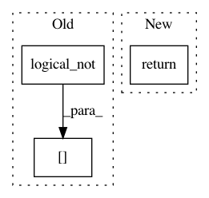

cddf39be59c3c1231d2d4fd3b9bfc10a21e63780,imblearn/under_sampling/prototype_selection/tomek_links.py,TomekLinks,_sample,#TomekLinks#Any#Any#,141
Before Change
return (X[np.logical_not(links)], y[np.logical_not(links)],
np.flatnonzero(np.logical_not(links)))
else:
return X[np.logical_not(links)], y[np.logical_not(links)]
After Change
idx_under = np.flatnonzero(np.logical_not(links))
if self.return_indices:
return (safe_indexing(X, idx_under),
safe_indexing(y, idx_under),
idx_under)
else:
return (safe_indexing(X, idx_under),
safe_indexing(y, idx_under))
In pattern: SUPERPATTERN
Frequency: 5
Non-data size: 3
Instances
Project Name: scikit-learn-contrib/imbalanced-learn
Commit Name: cddf39be59c3c1231d2d4fd3b9bfc10a21e63780
Time: 2017-08-24
Author: g.lemaitre58@gmail.com
File Name: imblearn/under_sampling/prototype_selection/tomek_links.py
Class Name: TomekLinks
Method Name: _sample
Project Name: chainer/chainer
Commit Name: 1a80b988e675f5f21fb870ebe9c4a65a2ae3593b
Time: 2019-10-30
Author: niboshi000@gmail.com
File Name: tests/chainerx_tests/unit_tests/routines_tests/test_indexing.py
Class Name:
Method Name: _random_condition
Project Name: pymc-devs/pymc3
Commit Name: 6c22688a5337598b1f136483731c14a4128fe823
Time: 2013-02-10
Author: jsalvatier@gmail.com
File Name: pymc/MAP.py
Class Name:
Method Name: nan_to_high
Project Name: chainer/chainer
Commit Name: d02772a31ca01d562d7d0e481e7ec2831decab4b
Time: 2019-10-11
Author: kataoka@preferred.jp
File Name: chainer/gradient_check.py
Class Name: _CheckBackward
Method Name: _sample_unit_vector
Project Name: PyMVPA/PyMVPA
Commit Name: 8fd610068478a0ecb3ca9fc1383d30128d075e53
Time: 2013-07-22
Author: nikolaas.oosterhof@unitn.it
File Name: mvpa2/misc/surfing/volsurf.py
Class Name: VolSurf
Method Name: surf_project_weights_nodewise